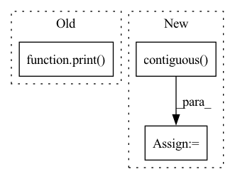

Pattern ID :63
Before Change
mixture = mixture.cuda()
sources = sources.cuda()
print( mixture.size(), sources.size())
batch_size, n_sources, T = sources.size()
mixture, sources = mixture.view(batch_size, T), sources.view(batch_size * n_sources, T)
mixture_resampled, sources_resampled = [], []After Change
_mixture_resampled = _mixture_resampled.squeeze(dim=1).cpu() // (batch_size, T)
_estimated_sources = _estimated_sources.squeeze(dim=2).cpu() // (batch_size, n_sources, T)
_mixture_resampled = _mixture_resampled.view(batch_size * T)
_estimated_sources = _estimated_sources.permute(1, 0, 2).contiguous() .view(n_sources, batch_size * T)
save_dir = os.path.join(self.sample_dir, titles)
os.makedirs(save_dir, exist_ok=True)In pattern: SUPERPATTERN
Frequency: 3
Non-data size: 3
Instances Fragment ID: 1003871
Project Name: tky823/dnn-based_source_separation
Commit Name: dd931cbe08e222702ca1c7e6ec30e0e9c8061a22
Time: 2021-08-13
Author: 40362510+tky823@users.noreply.github.com
File Name: egs/musdb18/meta-tasnet/src/adhoc_driver.py
M Class Name: Trainer
N Class Name: Trainer
M Method Name: run_one_epoch_eval(2)
N Method Name: run_one_epoch_eval(2)
M Parent Class: TrainerBase
N Parent Class: TrainerBase
M File Name: egs/musdb18/meta-tasnet/src/adhoc_driver.py
N File Name: egs/musdb18/meta-tasnet/src/adhoc_driver.py
M Start Line: 254
M End Line: 315
N Start Line: 305
N End Line: 321
Before Change
optimizer.step()
if i % print_freq == 0:
print( "Epoch: [{0}][{1}/{2}]\t"
"Time {batch_time.val:.3f} ({batch_time.avg:.3f})\t"
"Data {data_time.val:.3f} ({data_time.avg:.3f})\t"
"LR {lr.val:.2e}\t"
"Loss {loss.val:.4f} ({loss.avg:.4f})\t"
"Acc@1 {top1.val:.3f} ({top1.avg:.3f})".format(
epoch, i, len(train_loader), batch_time=meters["batch_time"],
data_time=meters["data_time"], lr=meters_params["learning_rate"], loss=meters["loss"], top1=meters["acc1"]))
After Change
model.train()
for i, (input1, input2) in enumerate(train_loader):
input1 = input1.to(device).contiguous()
input2 = input2.to(device).contiguous()
output = model(input1,input2)
loss = criterion(output)
Fragment ID: 1003878
Project Name: mlelarge/graph_neural_net
Commit Name: 6d30e3c762e778d602d07055eb05c77e44d7fe74
Time: 2020-02-12
Author: marc.lelarge@gmail.com
File Name: trainer.py
M Class Name: AnonimousClass
N Class Name: AnonimousClass
M Method Name: train_triplet(7)
N Method Name: train_triplet(6)
M Parent Class:
N Parent Class:
M File Name: trainer.py
N File Name: trainer.py
M Start Line: 3
M End Line: 26
N Start Line: 3
N End Line: 15
Before Change
idx = torch.arange(0,T,interval)
rpn_inputs = inputs[:,:,idx]
rpn_inputs = rpn_inputs.transpose(1,2).contiguous().view(N*(T//interval),C,H,W)
print( rpn_inputs.shape)
with torch.no_grad():
proposals = rpn(rpn_inputs)
proposals = proposals.view(N,T//interval,10,4)
outputs = model(inputs, proposals)After Change
interval = 16
// sample frames for RPN
idx = torch.arange(0,T,interval)
rpn_inputs = inputs[:,:,idx].transpose(1,2).contiguous()
rpn_inputs = rpn_inputs.view(-1,C,H,W)
if len(inputs) < max_N:
print("Modified from {} to {}".format(len(inputs), max_N))
rpn_inputs = torch.cat((rpn_inputs, rpn_inputs[:(max_N-len(inputs))*(T//interval)])) Fragment ID: 1003876
Project Name: jd730/strg
Commit Name: b98d2a6a9e626ae8be88646109eca0d53f1f4af5
Time: 2020-06-12
Author: jdhwang730@gmail.com
File Name: validation.py
M Class Name: AnonimousClass
N Class Name: AnonimousClass
M Method Name: val_epoch(9)
N Method Name: val_epoch(9)
M Parent Class:
N Parent Class:
M File Name: validation.py
N File Name: validation.py
M Start Line: 40
M End Line: 49
N Start Line: 34
N End Line: 62